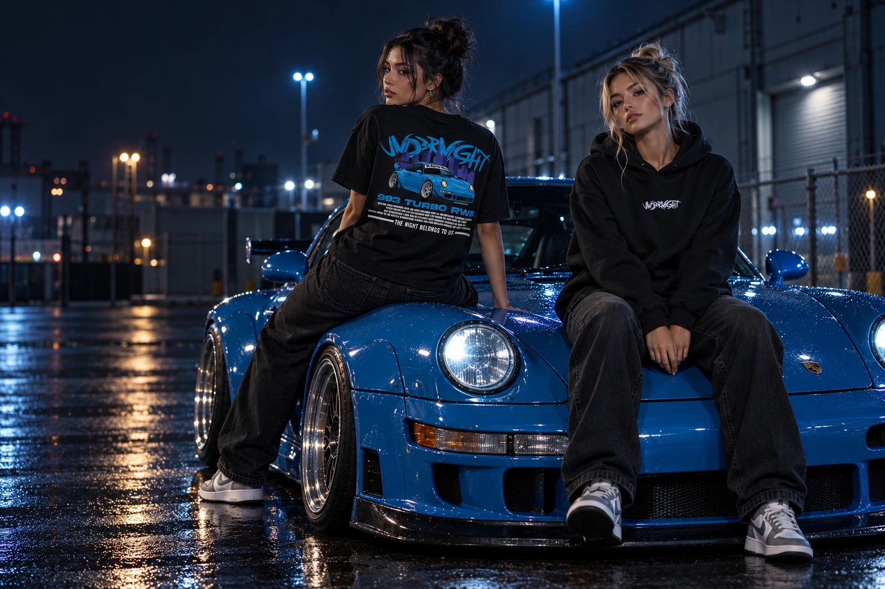

AFTER DARK COLLECTION / 01
NOC
NALEŻY
DO NAS.
Miasto zwalnia. My dopiero zaczynamy.
Ubrania dla tych, którzy żyją swoim rytmem.
01 / THE COLLECTION
Po zmroku. Po swojemu.
Wersja pokazowa · ceny i dostępność rozmiarów są przykładowe.
02 / BEHIND THE BRAND
NIE MUSISZ
PASOWAĆ.
BĄD SOBĄ.
UNDERNIGHT to miejsce, w którym streetwear spotyka motoryzację. Surowe grafiki, nocna energia i własne zasady.
Dla tych, którzy po zachodzie słońca czują się najbardziej sobą. Na miasto. Na spot. Na co dzień.
ZNAJDŹ SWÓJ STYL ↗03 / GOOD TO KNOW
Warto wiedzieć.
Jak wybrać krój i rozmiar?
Regular to klasyczny krój, a oversize to luźniejsza sylwetka. W karcie produktu wybierz rozmiar. Dokładne wymiary zostaną uzupełnione przed uruchomieniem sprzedaży.
Czy mogę już złożyć zamówienie?
To wersja pokazowa sklepu. Możesz wybierać produkty i testować koszyk, ale zamówienia oraz płatności nie są jeszcze przyjmowane.
Dostawa i zwroty
Metody i ceny dostawy, dane sprzedawcy oraz zasady zwrotów zostaną opublikowane przed rozpoczęciem sprzedaży.